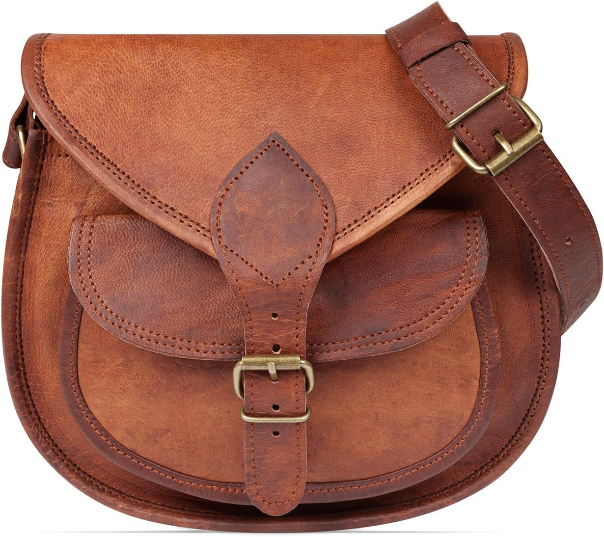

LEABAGS Bolso de Cuero para Mujer | Bandolera de Cuero Genuino | Hombro para Trabajo
LEABAGS Bolso de Cuero para Mujer | Bandolera de Cuero Genuino | Hombro para Trabajo, Universidad, Escuela y Tiempo Libre | Tamaño M (23 x 21 x 11 cm) | Vintage Cognac

LEABAGS Bolso de Cuero para Mujer | Bandolera de Cuero Genuino | Hombro para Trabajo, Universidad, Escuela y Tiempo Libre | Tamaño M (23 x 21 x 11 cm) | Vintage Cognac
LEABAGS · ASIN B0BGM3M85V
32,95
Lo que destacan las compradoras
- Material
- Comodidad
- Calidad
Lo que critican
- Olor inicial
- Cierres
Con una nota media de 4,0 sobre 5 en 318 valoraciones — una base de compra sólida — no es un bolso para comprar a ciegas: es para comprar convencido.
Ver precio en Amazon ↗Aparece en el diario los días: 38, 76, 114, 152, 190, 228, 266, 304, 342. Nota media 4,0★ sobre 318 valoraciones reales.